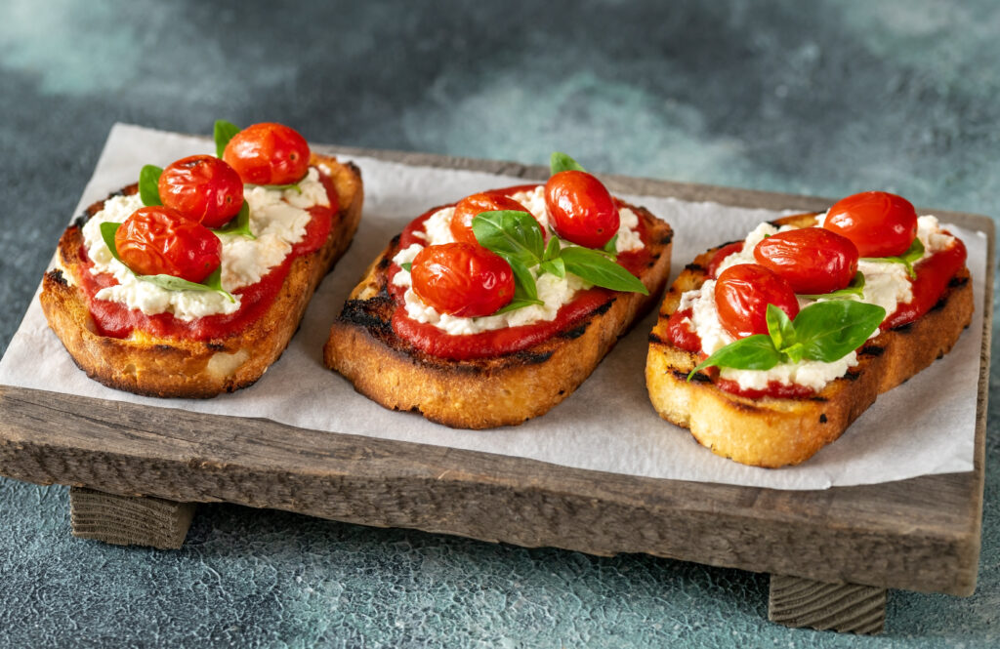
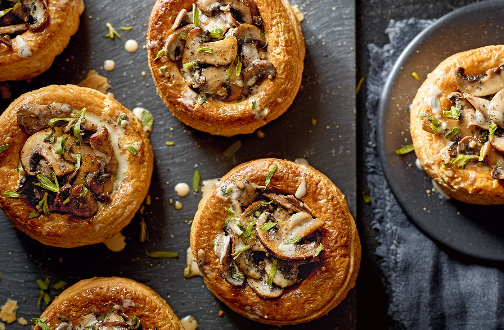

Bruschetta
Deliciosa torrada com tomates frescos, manjericão e azeite de oliva.
Délicieuse tartine aux tomates fraîches, basilic et huile d'olive.
R$ 20,00 / 5,00 €

Tapenade Provençal
Pasta de azeitonas pretas, alcaparras e anchovas servida com pão rústico.
Pâte d'olives noires, câpres et anchois servie avec du pain rustique.
R$ 25,00 / 6,00 €
Pão de Queijo Francês (Gougères)
Pequenos pães de queijo franceses, crocantes por fora e macios por dentro.
Petits pains au fromage français, croustillants à l'extérieur et moelleux à l'intérieur.
R$ 18,00 / 4,50 €
Vol-au-vent de Cogumelos
Folhados franceses recheados com creme de cogumelos.
Feuilletés français farcis à la crème de champignons.
R$ 35,00 / 8,50 €

Velouté de legumes
Molho branco de frango, vitela ou de peixe.
Sauce blanche pour poulet, veau ou poisson.
R$ 25,00 / 4,06 €
Quiche Lorraine
Torta aberta feita com recheio à base de ovos e creme de leite, pedacinhos de toucinho defumado. A massa usada é a patê brisée.
Tarte ouverte composée d'une garniture à base d'œufs et de crème et de petits morceaux de lard fumé. La pâte utilisée est du pâté brisé.
R$ 30,00 / 4,87 €
Sopa de cebola gratinada
Sopa de cebola com as fatias de pão italiano e queijo gruyère.
Soupe à l'oignon avec tranches de pain italien et gruyère.
R$ 38,00 / 6,17 €
Escalope Foie Gras
Escalope de foie gras, chutney de cebola e pão de gengibre.
Escalope de foie gras, chutney d'oignons et pain d'épices.
R$ 180,00 / 29,23 €
Salada composta
Alface frisé,agrião, tomates cerejas, ovo de codorna,pão integral,bacon, cenoura, cebolinha francesa picada,azeite,mel,mostarda, limão e sal.
Laitue frisée, cresson, tomates cerises, œuf de caille, pain complet, bacon, carotte, oignon français haché, huile d'olive, miel, moutarde, citron et sel.
R$ 60,00 / 9,74 €
Salmão defumado
Salmão defumado em fatias com mix de folhas.
Tranches de saumon fumé aux feuilles mélangées.
R$ 85,00 / 13,80 €